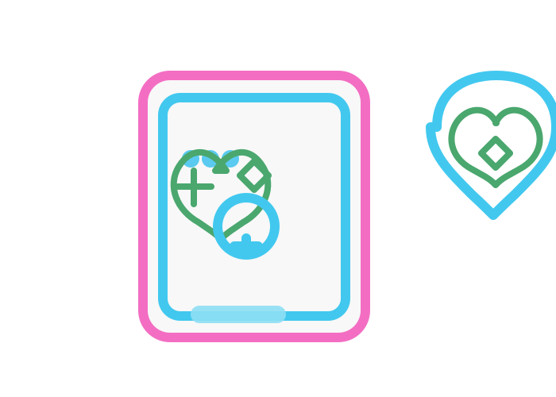

My Doctor Family Practice provides gender-affirming healthcare (GAHC) to trans, non-binary, and gender-diverse individuals across South Africa. Consultations are available virtually or in person at our practice in Strandfontein.
Practice address: 65A Dennegeur Avenue, Strandfontein
How to Book
To book a virtual or in-person consultation, visit www.mydr.co.za or contact the practice directly. Please provide the following information when booking:
Full name and surname (as per South African ID/passport)
Gender listed on South African ID/passport
Preferred name
Preferred gender identity (e.g. trans man, trans woman, non-binary)
South African ID number or passport number
Cellphone number
Email address
WITS RHI / Ivan Toms folder number (if applicable)
Care requested: continuation or initiation of GAHC

Consultation Options
In-Person Consultations
Fee: R450 [Fees applicable from 1st March 2026; pricing subject to change]
Includes:
Comprehensive medical history, assessment, and physical examination
Blood tests taken in rooms, which may include:
STI screening
Glucose
Renal and liver function
Pregnancy test (where applicable)
Testosterone or oestrogen levels (where applicable) (Laboratory costs discussed during the consultation)
Discussion of treatment options and individual needs
Referrals where appropriate (e.g. psychology or surgical services)
Information-sharing and informed consent documentation
Gender marker change forms provided (where applicable)
Virtual Consultations
Fee: R335 [Fees applicable from 1st March 2026; pricing subject to change]
Includes:
Medical history and clinical assessment
Pathology request form for blood tests at a walk-in laboratory
Discussion of treatment options and individual needs
Referrals where appropriate (e.g. psychology or surgical services)
Information and consent forms to be completed and returned to the practice
Gender marker change forms provided (where applicable)
Follow-Up and Ongoing Care
Patients will be contacted once blood results are available
Prescriptions are issued based on results and agreed treatment plans
A pathology form is provided for 1-month follow-up blood tests
Bloods must be taken on the morning of the 5th week injection, before administering the weekly dose
Tests can be done at the practice or a walk-in laboratory
Important Information
My Doctor Family Practice is a private practice and not a free clinic
Patients are responsible for all consultation, laboratory, and medication costs
Prescriptions will not be issued without the required blood test results
Medications must be obtained from:
Compounding pharmacies or
Local pharmacies, where applicable (at the patient’s own cost)